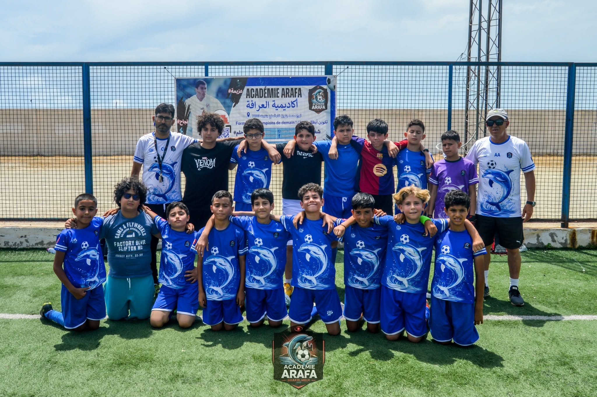
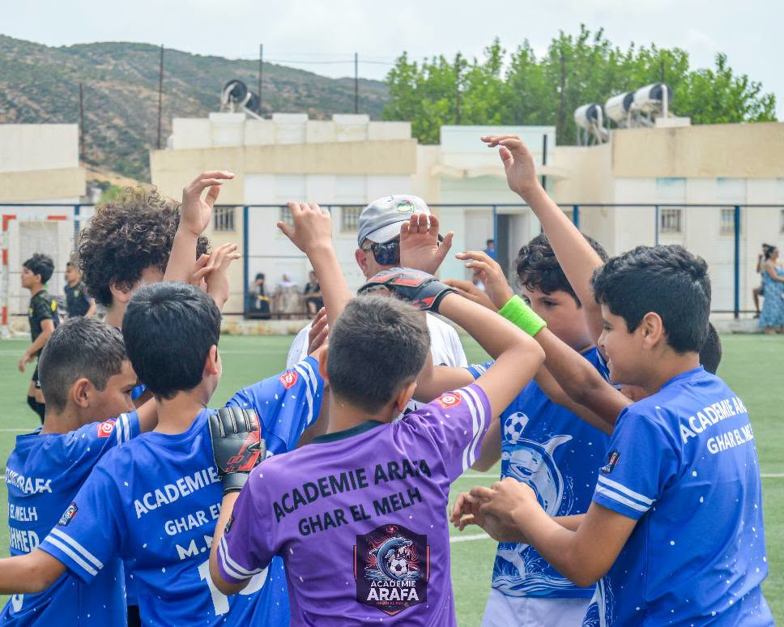

NÉS EN 2018 – 2019
PREMIERS PAS
Découvrir le ballon, s’amuser et prendre confiance dans le jeu.
Voir les horaires
BIENVENUE À L’ACADÉMIE ARAFA
Le talent se cultive. La passion se partage.
À Ghar El Melh, faisons grandir ensemble
la prochaine génération de footballeurs.

NOTRE ACADÉMIE
À l’Académie Arafa, chaque enfant a une place et une passion à faire grandir. Ancrée à Ghar El Melh, notre académie réunit les jeunes autour du plaisir de jouer et de progresser ensemble.
Un beau geste, une passe décisive, un encouragement : c’est aussi dans ces petits moments que se construisent la confiance, le respect et l’esprit d’équipe.
À CHACUN SON TERRAIN
Des groupes par année de naissance,
pour grandir avec le ballon à ses pieds.
NÉS EN 2018 – 2019
Découvrir le ballon, s’amuser et prendre confiance dans le jeu.
Voir les horairesNÉS EN 2016 – 2017
Explorer les gestes du football et découvrir le plaisir de jouer ensemble.
Voir les horairesNÉS EN 2014 – 2015
Affiner ses gestes, comprendre le jeu et faire la différence en équipe.
Voir les horairesNÉS EN 2012 – 2013
Développer sa lecture du jeu et se dépasser avec ses coéquipiers.
Voir les horairesLes groupes correspondent aux catégories des affiches de l’académie. Contactez-nous pour connaître les possibilités d’accueil actuelles.
CEUX QUI TRANSMETTENT
Des parcours, de l’expérience.
Et la même envie de transmettre.
RESPONSABLE TECHNIQUE
RESPONSABLE DES JEUNES
COACH
COACH
RENDEZ-VOUS SUR LE TERRAIN
Retrouvez les créneaux indiqués sur les affiches de l’académie et préparez votre prochaine séance.
Se renseigner sur les entraînementsHoraires issus des affiches fournies, à confirmer auprès de l’académie avant votre déplacement.
Consulter l’afficheL’ESPRIT ARAFA EN IMAGES
ON VIENT POUR LE FOOTBALL.
ON RESTE POUR LA FAMILLE.
LE PROCHAIN CHAPITRE, C’EST VOUS
Votre enfant aime le football ? Parlons de sa prochaine aventure. L’équipe vous renseigne sur les inscriptions, les catégories et les entraînements.
Contacter l’académie Échangez directement avec notre équipe sur Facebook.TOUT COMMENCE PAR UNE QUESTION
Contactez l’académie via sa page Facebook en précisant l’année de naissance de votre enfant. L’équipe vous communiquera les places disponibles, les modalités et les documents nécessaires.
Les affiches présentent quatre groupes : 2018–2019, 2016–2017, 2014–2015 et 2012–2013. Pour une autre année de naissance ou les catégories de la saison en cours, renseignez-vous directement auprès de l’équipe.
Une tenue de sport confortable, une gourde et des chaussures adaptées au terrain. Avant la première séance, demandez au coach de confirmer l’équipement requis et le lieu de rendez-vous.
La page Facebook de l’Académie Arafa partage la vie de l’équipe, ses photos et ses annonces. Consultez-la aussi pour confirmer les horaires avant de vous déplacer.